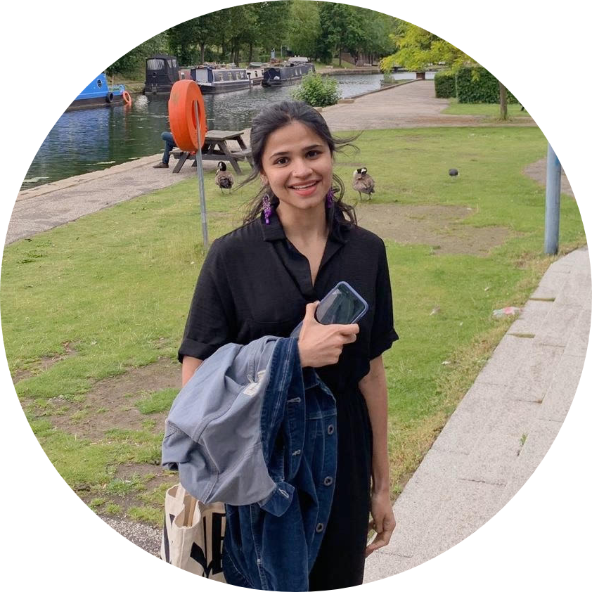

|  | LLB Student at Queen Mary University of London I am an aspiring commercial solicitor with an interest in international arbitration, M&A and restructuring and insolvency. |
| Dates | Work |
|---|---|
| October 2018- February 2019 | Lead Mentor at Debate Mate |
| July 2018- August 2018 | Private Equity Summer Analyst at Capital Square Partners |
| Legal Research | 🌟🌟🌟🌟 | Financial Modelling | 🌟🌟🌟🌟 |
| Front-end Web Development | 🌟🌟🌟 | Financial Analysis | 🌟🌟🌟🌟 |